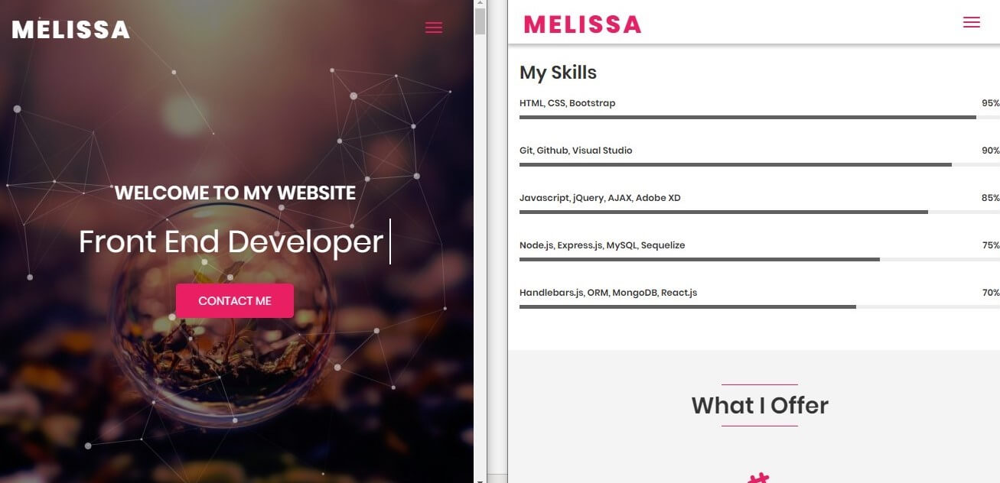

Blogs
Building my portfolio
This portfolio is not only representing my work and experiences it is also personifying me, the users of this website must recognise how professional is the developer of the website.
Research
In my research I have used google search and GitHub to find the specialized portfolios from the most experienced people. During my research I made a list of the things and unique ideas I liked in different portfolio sites which I could also code to include in my site or come up with something unique such as creating a different flow in each section.
Inspiration and IdeasOne of the portfolios in my research I have adored is from GitHub of Melissa Perez who is also a website developer.
Perez, M. website (2019).
There are many reasons why I like the portfolio it is professional, classy, attentive and clear touch of details. Melissa has developed an eye-catching portfolio as you open the site the first thing you see is the animated banner an optional button to play music on the right-hand side of the navigation. The features on her website is very interesting and Melissa has coded each section differently, moreover it seems like she knows her target audience very well as she added animates which creates an impressive technique look.
Development process
Planning the portfolio according to the brief is a good idea as you can easily plan your steps without falling apart. I have planned each page following the given brief and before coding or staring my website design I planned to write down the data that I wanted on my website. For example, the about me section is from my CV which I had written a few weeks before and the blogs were written during the lectures with my lecturers who reviewed the blogs to confirm if they are suitable to go on the portfolio, then the portfolio section was just linking my pass work and including a few sentences on how they are relevant and any benefits. Over the development process I had to make decisions and choices such as designing on either a classic website or a colourful lively site, it was a hard choice as I was feeling both, so I found the middle way out by following few rules of making an effective website. I have used clean design, simple, responsive, added pictures, effective written content, decent colours, easy to navigate, focused and highlighted contact information.
ImagesThe images I have used are my own and they do not need any copyright, the reason for using images of building and unrelated stuff is because these are from my Creative Media project coursework from the second year. I really enjoy photography, and I want to develop this talent, so I have chosen some of my favourite shots to help illustrate my site and show my skills.
Tools & TechniquesI have used resourceful tools and techniques to design the portfolio such as the wireframe sketches and moodboard to help me decide the type of theme or structure will stand out on my portfolio to reflect my personality. I have gone for a black and white theme colours with a touch of bright pink colour to highlight few areas such as the navigation bar, however there is a use of transparency and transparent colours which gives the site a reflective glass appearing look. It is a responsive site which can be used on Desk-top, Tablet and phone too, to make the website design responsive I have used HTML and CSS to automatically shrink, enlarge, hide or resized to fit on all devices.
Responsive portfolioTo create a responsive portfolio here are the practical steps I have taken, I have used flexbox to prevent the layout from floating round on the device by aligning and justifying items on the main it keeps the content structured in a box by distributing space between flex items. I have also used media queries, optimized images, considered mobile first design, responsive layout and CSS grid.
Reference:
Perez, M. (2019). Melissa Perez-Web Developer. [online] Melissaperez.dev. Available at: Link [Accessed 4 Nov. 2019].